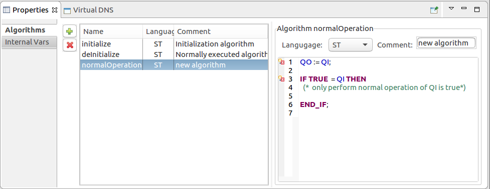
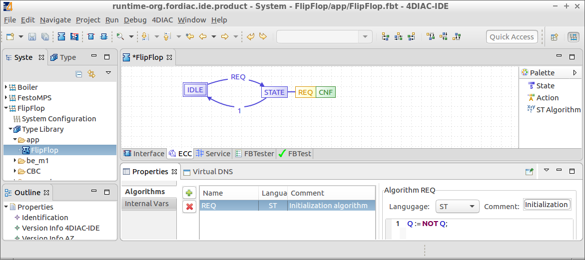

Create Flip-Flop Basic Function Block
After creating a Basic Function Block (BFB)  and its interface perform the following steps to add the Flip-Flop functionality to your own BFB.
and its interface perform the following steps to add the Flip-Flop functionality to your own BFB.
- Within the Type Info properties view, that is shown in the Interface tab, enter a comment description for the Flip-Flop like Flip Flop alternating on/off
- Within the Interface tab you should have the following interface:

- Within the Algorithms property sheet delete the existing Algorithms because we do not need them.
And create a REQ Algorithm.
In the ST (Structured Text) area enter Q := NOT Q;

- Within the ECC tab delete or adapt the default Execution Control Chart (ECC) according to the figure below.
- Open the palette on the right and bring in 2 States or modify the existing States.
Name the states IDLE and STATE.
Consider that the first inserted State is marked as the initial State by a double border.
This initial State is named IDLE.
- Bring an Action for the STATE state or modify an existing one.
Set the Algorithm to REQ and the event output to CNF
- Connect IDLE to STATE (start when connector symbol appears) and change the trigger input event to REQ.
Connect STATE to IDLE and leave the trigger at 1.
